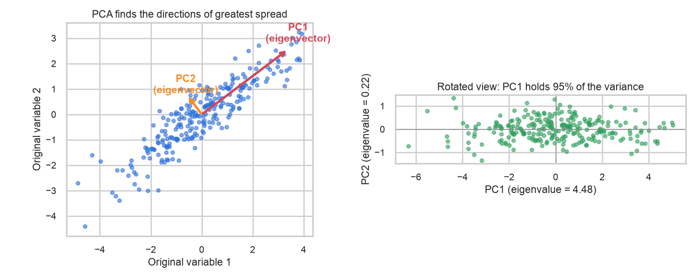
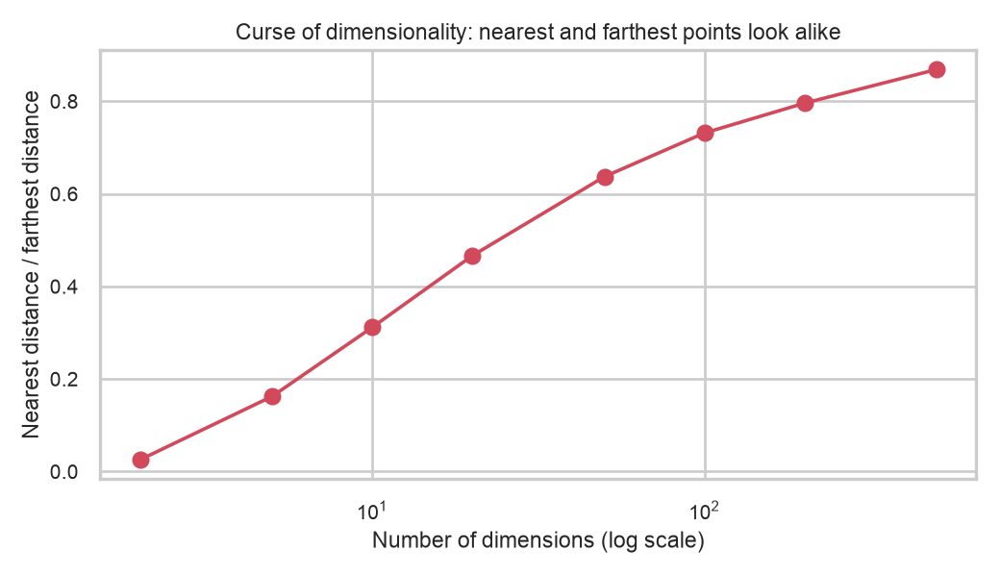
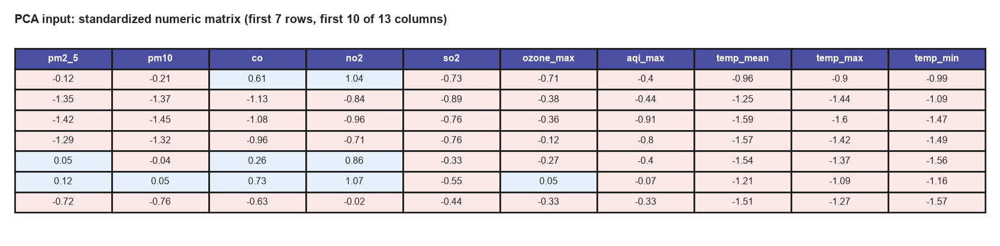
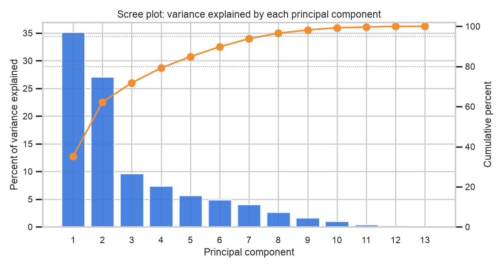
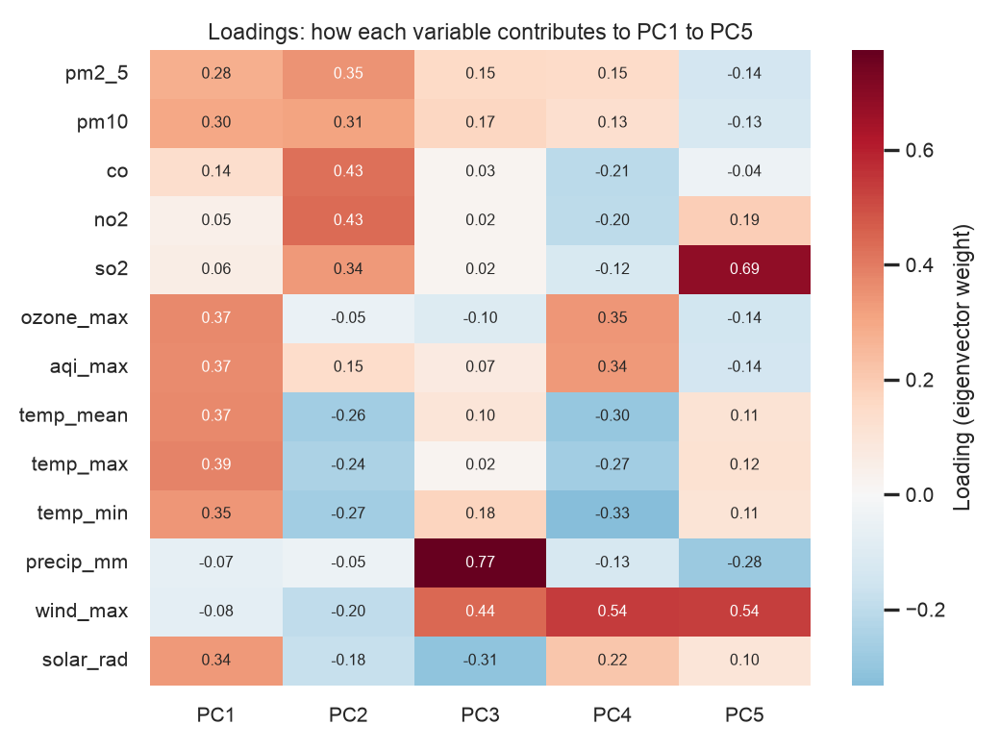
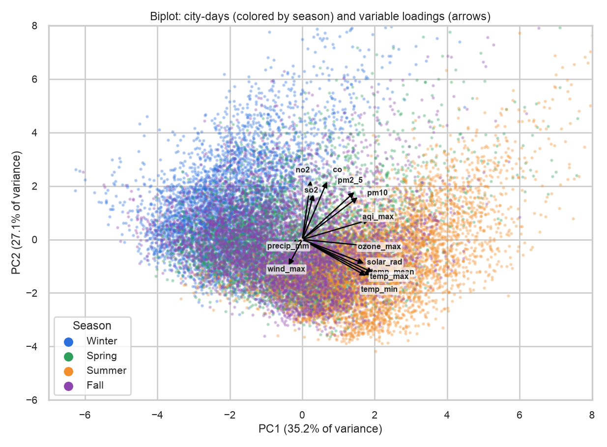
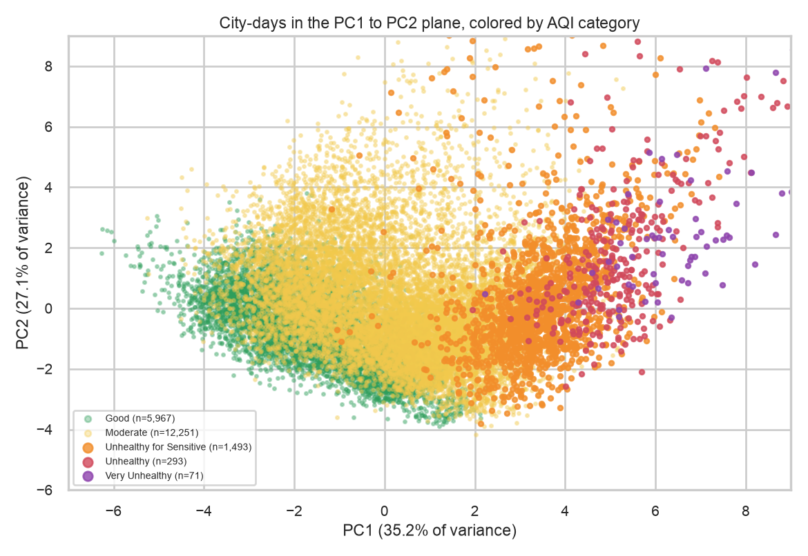
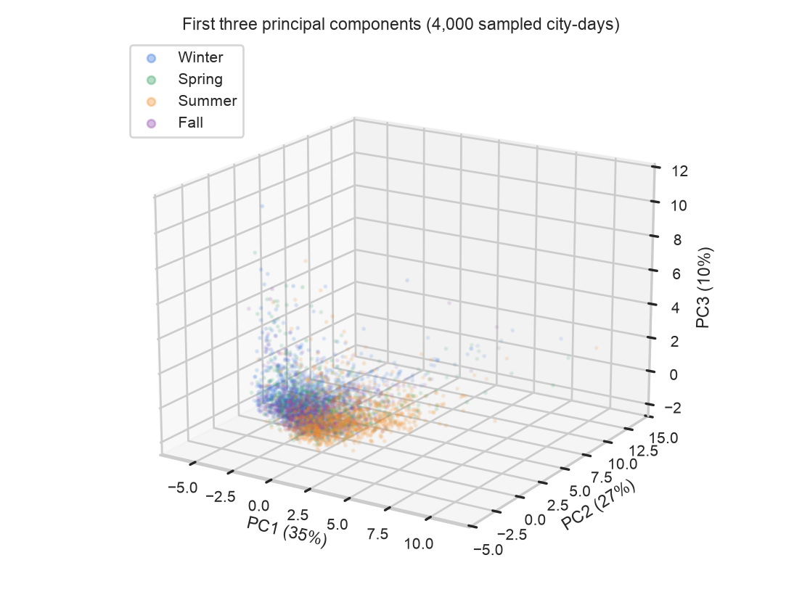
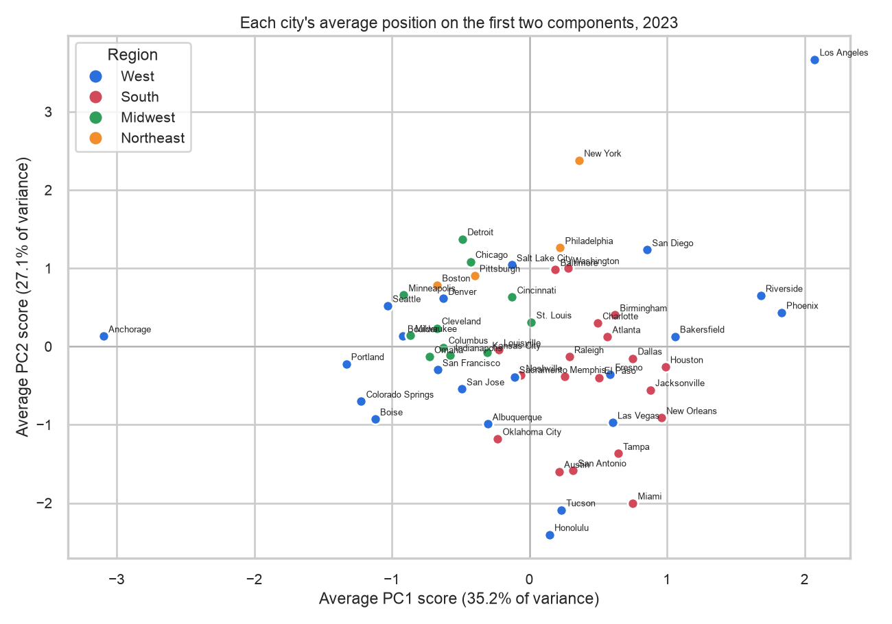

PCA
Reducing 13 daily air quality and weather measurements to a few patterns
Principal component analysis (PCA) takes many related numeric variables and rewrites them as a smaller set of new, uncorrelated variables that keep as much of the original variation as possible. Here it is applied to the 20,075 city-days of the daily table, which describe each day with 13 pollutant and weather measurements. The write-up is organized into Overview, Data Prep, Code, Results and Conclusions.
Overview
PCA is an unsupervised, linear method for dimensionality reduction. It looks for the direction in the data along which the observations spread out the most, calls it the first principal component, then looks for the direction of greatest remaining spread that is perpendicular to the first, and so on. Each principal component is a weighted combination of the original variables, the components are uncorrelated with each other, and they are ordered by how much variation they carry. Keeping only the first few therefore compresses the data while discarding the least informative directions.
Eigenvalues and eigenvectors
The mathematics sits in the covariance matrix of the standardized variables, which records how every pair of variables moves together. An eigenvector of this matrix is a direction that the matrix only stretches and does not rotate, and the amount of stretching is its eigenvalue. For PCA the eigenvectors are the principal components (the axes), the eigenvalue of each one is the variance of the data along that axis, and the eigenvalue divided by the sum of all eigenvalues is the share of the total variance that component explains. Sorting the eigenvectors from the largest eigenvalue to the smallest gives PC1, PC2, and so on.
Singular value decomposition (SVD) reaches the same answer without forming the covariance matrix. A centered data matrix X with n rows is factored as X = U Σ VT, where the columns of V are the principal directions (the eigenvectors) and the squared singular values divided by n - 1 are the eigenvalues. Statistical packages usually compute PCA this way because it is numerically stable. The code for this tab checks the equivalence on the actual data: the eigenvalues from the covariance matrix, from scikit-learn and from the SVD agree to about 10-14.

Dimensionality reduction and the challenges of many dimensions
Dimensionality reduction means describing each observation with fewer variables while losing as little information as possible. It matters for several reasons. People can only look at two or three dimensions at once, so reduction makes it possible to see structure in data that have many columns. Real measurements are often redundant (here PM2.5 and PM10 are almost the same signal, and the three temperature variables move together), and reduction removes this duplication, which also avoids the instability that correlated predictors cause in later models. Fewer variables mean faster computation and less noise.
High-dimensional data bring particular problems that are often called the curse of dimensionality. As the number of dimensions grows, the space becomes so large that data points become sparse, and a fixed number of observations covers less and less of it. Distances also lose meaning, because the nearest and farthest neighbors of a point end up at almost the same distance, which damages methods based on distance such as clustering and nearest-neighbor classification. Models with many inputs overfit more easily, and results are harder to explain. Projecting the data onto a few principal components addresses these problems by keeping the directions that carry the signal.

Data Prep
PCA requires a numeric matrix with no missing values and no label columns. Because it works on variance, variables with large units would dominate: carbon monoxide is measured in hundreds while precipitation is mostly near zero. Each column was therefore centered and scaled to a mean of 0 and a standard deviation of 1 before the analysis, so that PCA effectively decomposes the correlation matrix.
The sample is the daily city table: 20,075 city-days by 13 numeric columns. The variables are PM2.5, PM10, carbon monoxide, nitrogen dioxide, sulphur dioxide, maximum ozone, maximum AQI, mean, maximum and minimum temperature, precipitation, maximum wind speed and solar radiation. The city, state, date, month, season, region, AQI category and rainy-day flag were removed from the matrix and kept aside, to color the plots afterwards. Extreme smoke days were kept in the data, since they are real events, which means that they can pull the components toward pollution.

- pca_input_numeric.csv: the full 20,075 x 13 numeric matrix in original units
- pca_scores_sample.csv: the scores on the first five components for a random sample of 2,000 city-days, with the labels used for coloring
- daily_city_air_weather_clean.csv: the cleaned daily table the matrix was taken from
Code
The analysis is written in Python 3.14 with pandas, numpy (numpy.linalg.svd), scikit-learn (StandardScaler, PCA), matplotlib and seaborn.
05_pca.pyon GitHub: standardizes the data, fits PCA, verifies the result with SVD, and draws every figure on this tab- pca_results.json: all numbers quoted below (eigenvalues, loadings, scores)
Results
How many components are needed
The first component explains 35.2% of the total variance (eigenvalue 4.57), the second 27.1% (3.52), and the third 9.6% (1.25), so the first two together carry 62.2% and the first three 71.9%. Three components have an eigenvalue above 1 (the Kaiser rule, which keeps components that explain more than one original variable's worth of variance). Reaching 80% of the variance takes 5 components, 90% takes 7 and 95% takes 8, so the 13 variables are reducible to a handful of patterns but not to just two.

Relationship between variables and components
Each component is a weighted sum of the variables, and the weights are called loadings (the entries of the eigenvector). A large positive or negative loading means that the variable contributes strongly to the component, and variables with loadings of the same sign move together along it. The heatmap reads as a recipe for each component.

- PC1 (35.2%), the warm and sunny axis. Temperature (loadings 0.35 to 0.39), maximum ozone (0.37), AQI (0.37) and solar radiation (0.34) all load positively, with PM2.5 (0.28) and PM10 (0.30) smaller. The score correlates 0.80 with mean temperature and 0.80 with ozone. This is the chemistry of summer smog: sunny, hot days go together with high ozone.
- PC2 (27.1%), the combustion pollution axis. Nitrogen dioxide (0.43), carbon monoxide (0.43), PM2.5 (0.35) and sulphur dioxide (0.34) load positively while temperatures load negatively (about -0.25). Its score correlates 0.66 with PM2.5. High values mean a day with traffic and heating pollution building up in cool, still air.
- PC3 (9.6%), the wet and windy axis. Precipitation (0.77) and wind (0.44) load positively and solar radiation negatively (-0.31), which describes stormy, cloudy weather.

The biplot shows the relationships directly. The three temperature arrows and solar radiation point almost the same way, which confirms that they are near-duplicates, and the pollutant arrows (nitrogen dioxide, carbon monoxide, sulphur dioxide and particles) form a second bundle that is roughly at a right angle to the temperature bundle, which means that heat and combustion pollution vary largely independently. PM2.5 sits between the two bundles, since fine particles come both from local combustion and from sunlight-driven chemistry and smoke. By season, the average PC1 score is 2.08 in summer and -1.74 in winter, and the average PC2 score is 1.11 in winter and -0.77 in summer.


City profiles

Averaged over the year, the cities with the highest PC1 are Los Angeles (2.07), Phoenix (1.83), Riverside (1.68) and Bakersfield (1.06), which are hot, sunny and high in ozone, and the lowest are Anchorage (-3.10), Portland (-1.33), Colorado Springs (-1.22) and Boise (-1.12). On PC2, Los Angeles (3.67), New York (2.38), Detroit (1.37) and Philadelphia (1.26) have the heaviest combustion pollution, whereas Honolulu, Tucson, Miami and Austin are lowest. Los Angeles is the only city that stands out on both axes.
Conclusions
The 13 daily measurements are far more redundant than they first appear. Three components (71.9% of the variance) are enough to describe the main patterns, and each has a plain meaning: how hot and sunny the day is (with ozone rising with it), how much combustion pollution has built up, and how wet and windy the weather is. Heat and ozone move together, and combustion pollution tends to build up on cool days, so the seasons leave two distinct signatures: summer smog on one axis and winter pollution on the other. Fine particles (PM2.5) load on both axes, which suggests that weather alone will not predict them well.
The components also line up with air quality categories, so a day's position on just two axes already says a great deal about whether the air is likely to be unhealthy. At the city level, Los Angeles combines both kinds of pollution, desert and Southwest cities are mainly hot and ozone-driven, and cities such as Anchorage and Portland are low on both. For the rest of the project, these results suggest that later models can use a few components or a few carefully chosen variables in place of 13 overlapping ones. PCA is linear and sensitive to extreme days such as the smoke episodes, and the later components (beyond the third) carry small, harder-to-interpret shares of the variation.